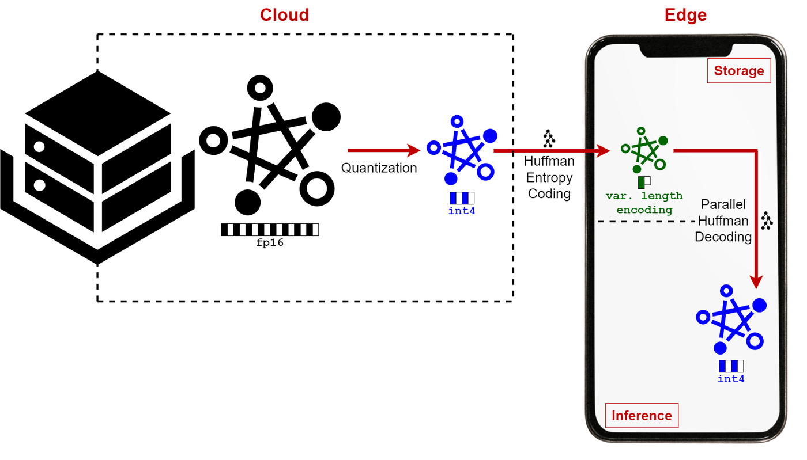
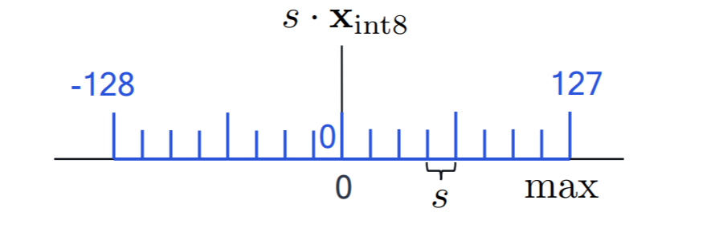
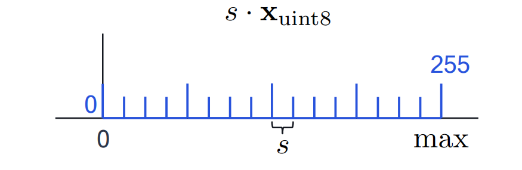
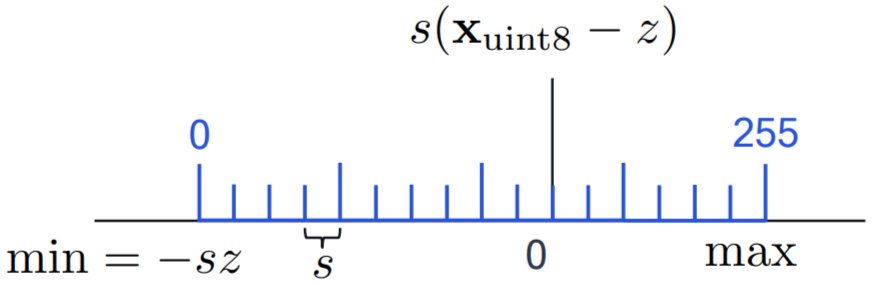
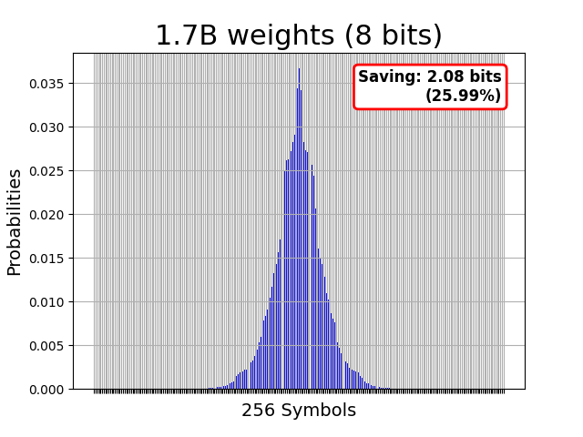
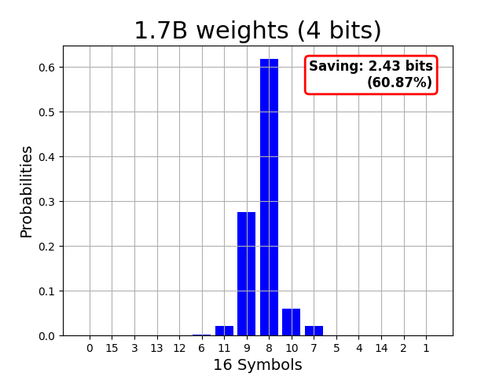
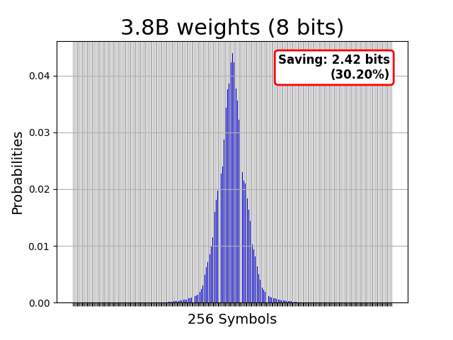
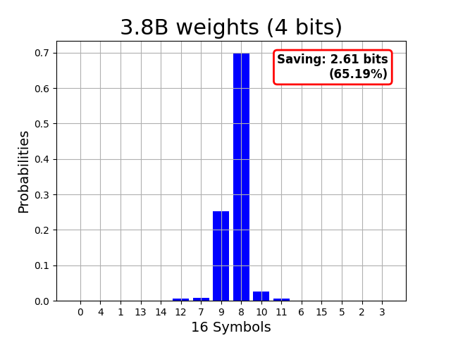
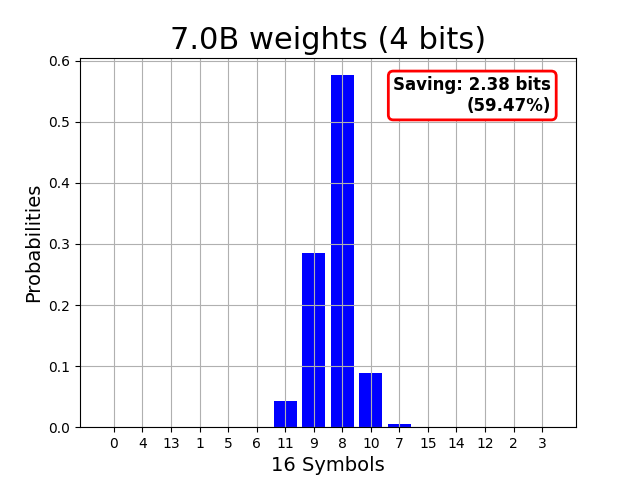
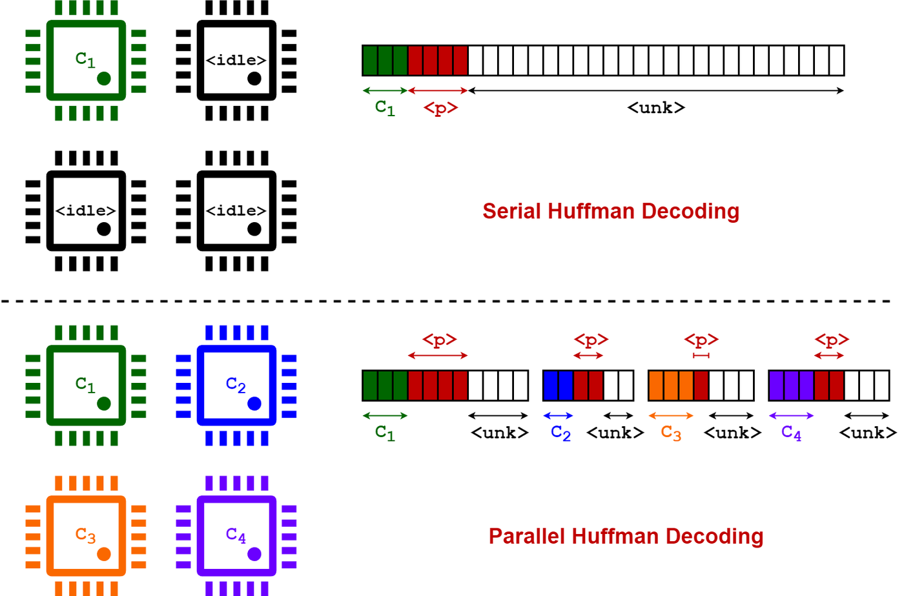

TL;DR — On edge devices, LLM inference is limited by how fast weights can be moved, not by compute.
EntroLLM squeezes quantized weights further with lossless Huffman coding. Quantizing each tensor as a whole
(instead of in small blocks) makes the integer weights far more predictable and so far more compressible, and a
parallel decoder unpacks them quickly. With no retraining, phi3-mini-4k's uint4
weights drop to 1.39 bits on average and generate tokens 146.6% faster on an NVIDIA Jetson.

Figure 1. A floating-point model is quantized with a mixed scheme chosen to maximize compressibility.
The integer weights are entropy-coded for storage on the edge device, then decoded in parallel at inference.
Abstract
Large Language Models (LLMs) achieve strong performance across tasks, but face storage and compute challenges
on edge devices. We propose EntroLLM, a compression framework combining mixed quantization and entropy coding
to reduce storage while preserving accuracy. We use a combination of unsigned and asymmetric quantization.
Tensor-level quantization produces an entropy-reducing effect, increasing weight compressibility, and improving
downstream Huffman encoding by 7× (8-bit) and 11.3× (4-bit) over state-of-the-art methods. Huffman
coding further reduces memory bandwidth demands, while a parallel decoding strategy enables efficient weight
retrieval with minimal latency. Experiments on edge-scale LLMs (smolLM-1.7B,
phi3-mini-4k, mistral-7B) show up to 30% storage savings
over uint8 and 65% over uint4 models, with 31.9–146.6% faster inference on memory-limited devices like the
NVIDIA Jetson P3450. EntroLLM requires no retraining and is compatible with existing post-training quantization
pipelines, making it practical for edge LLM deployment.
Quantize for compressibility, not just for size
State-of-the-art LLM quantizers usually work on small blocks, e.g. 32 weights at a time. Each block gets its own
scale, which spreads the integer codes evenly across the grid and raises their entropy. Quantizing a whole tensor
with one scale instead leaves a much “spikier” distribution: a few central integer values dominate,
entropy drops, and a Huffman code can store the weights in far fewer bits. To keep accuracy, EntroLLM picks one of
two schemes per layer based on that layer's weight distribution.

(a) Symmetric signed
Shown for comparison: a signed grid centred on zero.

(b) Unsigned
Scale by s onto a grid that starts at zero. Used for layers whose weights suit it.

(c) Asymmetric
Shift by a zero-point z, then scale by s, so the grid covers the layer's actual min-to-max range.
Figure 2. Uniform quantization grids at 8 bits (floating-point grid in black, integer grid in blue).
EntroLLM uses (b) or (c) on each layer.
What the quantized weights look like

8-bit

4-bit

8-bit

4-bit
8-bit

4-bit
Figure 4. Distribution of the quantized weight values, with the bits per weight that Huffman coding saves.
Going from 8 bits (256 symbols) to 4 bits (16 symbols) piles most weights onto a few central values, so the
saving grows at lower bit-widths.
Lossless coding, decoded in parallel
Huffman weight encoding
Huffman coding gives frequent weight values short codewords and rare ones long codewords, and no other prefix
code does better. It is lossless: at inference the exact quantized integers come back, so accuracy is whatever
the quantizer delivered. Storage and memory traffic both shrink with the average code length.
Segmented, parallel decoding
Variable-length codes are normally decoded one symbol at a time, because you cannot know where the next symbol
starts. EntroLLM keeps each weight tensor as its own encoded segment with known boundaries, so segments decode
independently on separate threads with no synchronization. LLMs have hundreds to thousands of such tensors,
and shuffling several segments onto each thread balances the load.

Figure 3. Serial decoding cannot be split, because variable-length codes hide where each symbol starts.
Keeping the original weight-tensor structure lets each encoded tensor go to its own core.
<p> marks the bits being decoded, <unk> the bits not yet reached.
Results
1.39 bits
average per uint4 weight in phi3-mini-4k, 65% less than uint4 (5.58 bits for uint8, 30% less)
7.0–13.1×
more bits saved by Huffman coding than with the SOTA quantizer (Table 2)
+146.6%
token-generation speed for uint4 on a Jetson P3450 (+31.9% for uint8)
None
retraining needed; it works on top of existing post-training quantization
Compressibility
Bits saved per weight
smolLM-1.7B
phi3-mini-4k
mistral-7B
SOTA
Ours
Gain
SOTA
Ours
Gain
SOTA
Ours
Gain
8-bit
0.29
2.08
7.2×
0.30
2.42
8.1×
0.31
2.16
7.0×
4-bit
0.21
2.43
11.6×
0.20
2.61
13.1×
0.21
2.38
11.3×
Table 2. Bits per weight that Huffman coding saves after the state-of-the-art (block-based) quantizer versus
after EntroLLM's tensor-level mixed quantization.
Accuracy
Model
Benchmark
fp16
uint8
uint4
SOTA
Ours
SOTA
Ours
smolLM-1.7B
WikiText-2 ppl. ↓
23.81
23.92
23.93
24.15
24.14
HellaSwag acc. ↑
25.87%
25.55%
25.55%
25.28%
25.30%
phi3-mini-4k
WikiText-2 ppl. ↓
9.03
9.45
9.44
10.11
10.10
HellaSwag acc. ↑
82.2%
82.11%
82.10%
81.00%
81.01%
GSM8K CoT acc. ↑
77.37%
72.85%
72.84%
70.57%
70.58%
mistral-7B
WikiText-2 ppl. ↓
8.17
8.22
8.24
8.28
8.29
HellaSwag acc. ↑
58.37%
58.34%
58.33%
58.23%
58.21%
GSM8K CoT acc. ↑
52.2%
48.63%
48.62%
45.38%
45.36%
Table 1. Accuracy stays within a few hundredths of the state-of-the-art quantizer at both bit-widths, while
the weights become far more compressible. The Instruct variants of each model are used; HellaSwag is 5-shot and
GSM8K chain-of-thought is 8-shot (not reported for smolLM).
Latency on an NVIDIA Jetson P3450
Stage (seconds)
uint8
uint4
no Huffman
Huffman
no Huffman
Huffman
Pre-fill
27.10
23.17
9.69
8.34
Token generation (per token)
0.083
0.063
0.062
0.025
Parallel decoding (once)
–
6.66
–
1.66
First-token latency
27.18
29.89
9.75
10.03
Table 3.phi3-mini-4k on a Jetson P3450 (quad-core Cortex-A57, 4 GB LPDDR4
at 25.6 GB/s) with four CPU threads decoding. Moving 5.58-bit instead of 8-bit weights means 30% less
data, a theoretical 1.43× speed-up for the bandwidth-bound generation phase; the measured gain is
1.32×. Decoding runs once per sequence, so it is paid for in the first token and then amortized.
Code
The code and compressed models are being released on GitHub.
The Code button above will link there once the repository is public.
Scope and limitations
First-token latency goes up. The one-time decode adds to the first token: 27.18 s to
29.89 s at uint8, 9.75 s to 10.03 s at uint4. The gains come afterwards, in token generation.
Latency is measured on one model and one device. Table 3 covers phi3-mini-4k
on a Jetson P3450 CPU. Pre-fill is compute-bound, so it gains less than generation.
GPUs have no native fractional bit-widths. On a GPU the benefit relies on kernels that pack and
unpack values efficiently; compute precision stays fixed and the savings are in memory traffic.
Future work includes adaptive entropy coding and hardware-aware optimizations.
BibTeX
@inproceedings{sanyal2026entrollm,
author = {Sanyal, Arnab and Datta, Gourav and Mukherjee, Prithwish and Chinchali, Sandeep P. and Orshansky, Michael},
title = {{EntroLLM: Entropy Encoded Weight Compression for Efficient Large Language Model Inference on Edge Devices}},
booktitle = {ICASSP 2026 - 2026 IEEE International Conference on Acoustics, Speech and Signal Processing (ICASSP)},
year = {2026},
pages = {19742--19746},
doi = {10.1109/ICASSP55912.2026.11464777}
}
The authors thank Amir Gholami, Coleman Richard Charles Hooper, and Kurt Keutzer for their input during ideation.